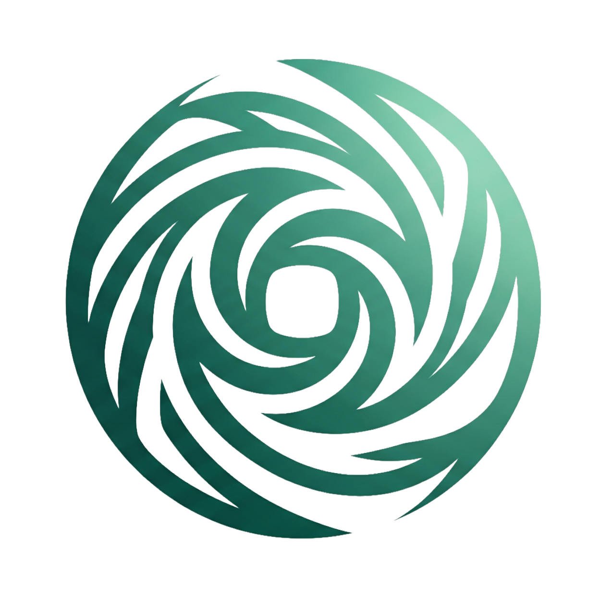

Track 2 · AI Software
An AI advisor for every CUNY student.
Vortex is a browser extension that reads your DegreeWorks audit and answers like an advisor who actually knows your record — your courses, your GPA, your transfer path.

VortexVortex is a browser extension that reads your DegreeWorks audit and answers like an advisor who actually knows your record — your courses, your GPA, your transfer path.